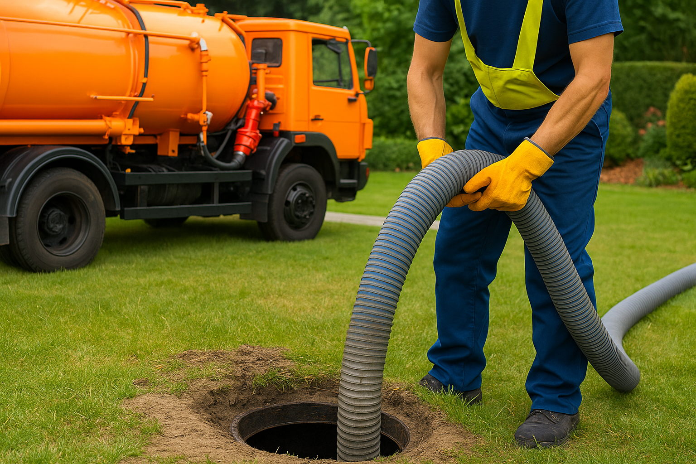
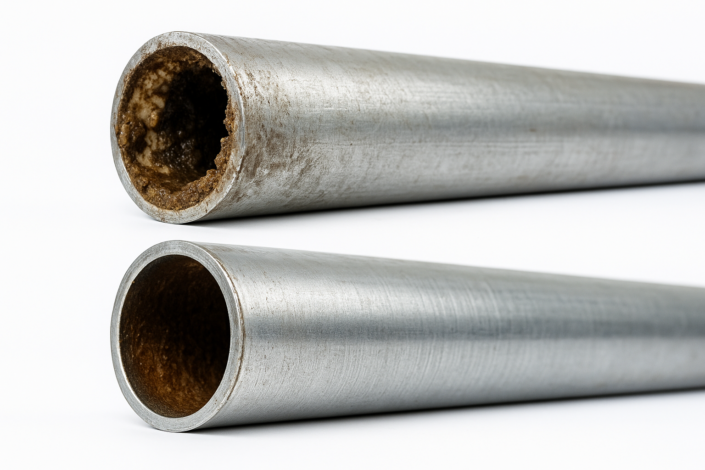
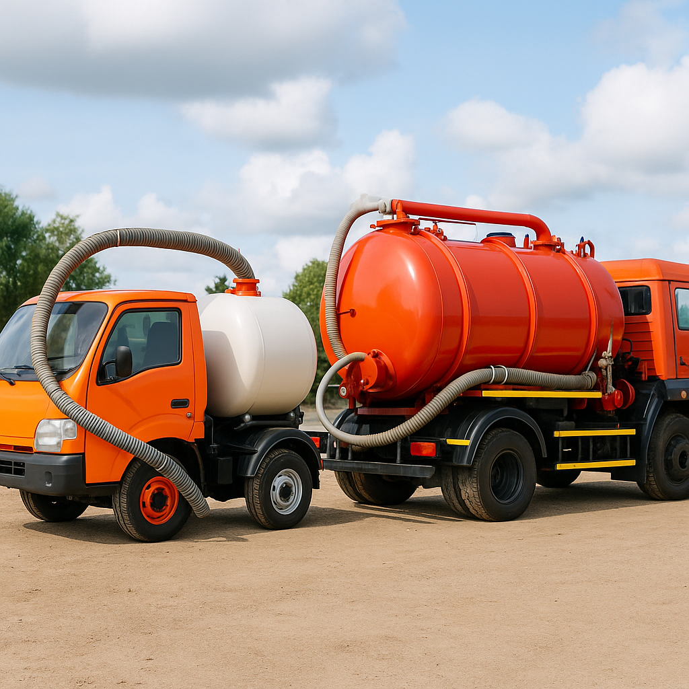
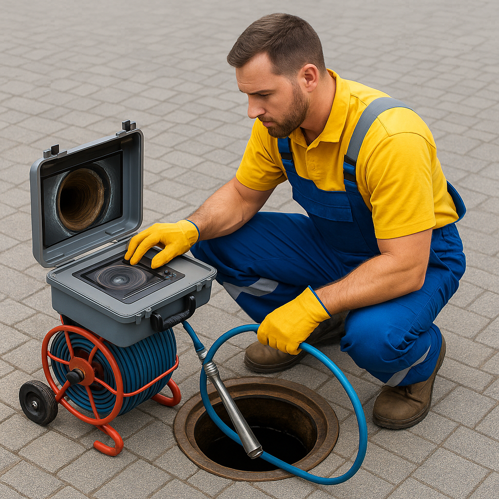
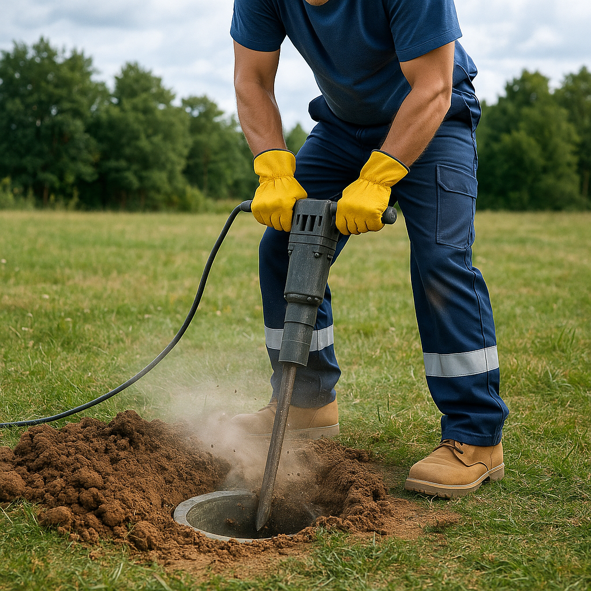

Наши услуги
Профессиональные ассенизаторские услуги и аварийная прочистка канализации 24/7
Быстрая и эффективная помощь при любых засорах. Используем механическую и гидродинамическую прочистку труб.
Аварийная прочистка канализации

Вода под высоким давлением очищает трубы от наростов, жира и ржавчины. Безопасно для всех типов труб, долговременный эффект.
Гидродинамическая прочистка

Удаляем сложные засоры тросом, специальными машинами и ручным инструментом. Эффективно даже при старых трубах и "застарелых" пробках.
Механическая прочистка

Быстро и аккуратно откачиваем любые объёмы — до 12 куб.м за выезд. Илосос, санитарная обработка, индивидуальный подход.
Откачка выгребных ям, септиков

Осмотр внутренних стенок труб с помощью видеокамеры — позволяет обнаружить любые проблемы и предотвратить аварии.
Видеоинспекция канализации

Находим скрытые колодцы и элементы канализации — для ремонта, обслуживания и предотвращения аварийных ситуаций.
Поиск скрытых колодцев
Регулярное сервисное обслуживание предприятий и юридических лиц. Официальные договора, гарантия и отчётность.